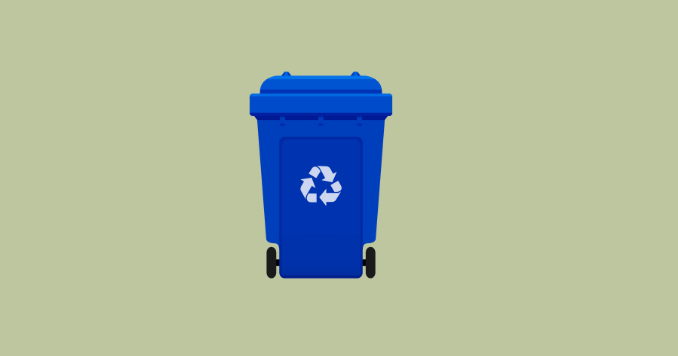

Sampah Organik
Sampah Organik terdiri dari sisa makanan, buah dan sayuran busuk, daun kering, serta kotoran hewan. Sampah ini dapat diolah menjadi kompos dan pupuk.

Sampah Non-Organik
Sampah Non-Organik meliputi plastik, kertas, karton, logam, dan kaca. Sampah ini dapat didaur ulang dan digunakan kembali.
Sampah B3
Sampah B3 (Bahan Berbahaya dan Beracun) mencakup baterai bekas, obat-obatan kadaluarsa, cat dan pelarut, serta limbah elektronik. Sampah ini memerlukan penanganan khusus untuk mencegah kerusakan lingkungan.
Sampah Daur Ulang
Sampah Daur Ulang terdiri dari plastik botol, kertas karton, dan logam kaleng. Sampah ini dapat didaur ulang dan digunakan sebagai bahan baku produk baru.